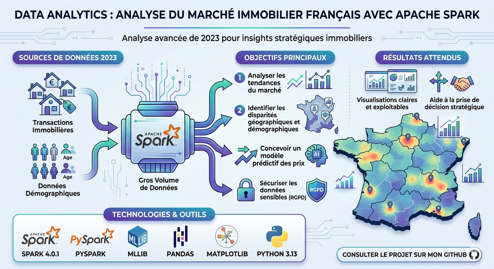
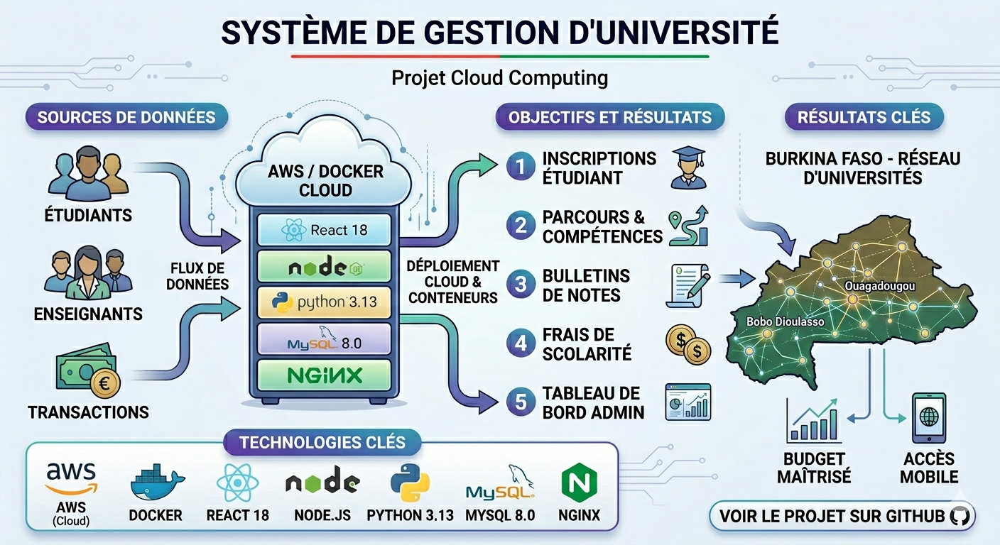
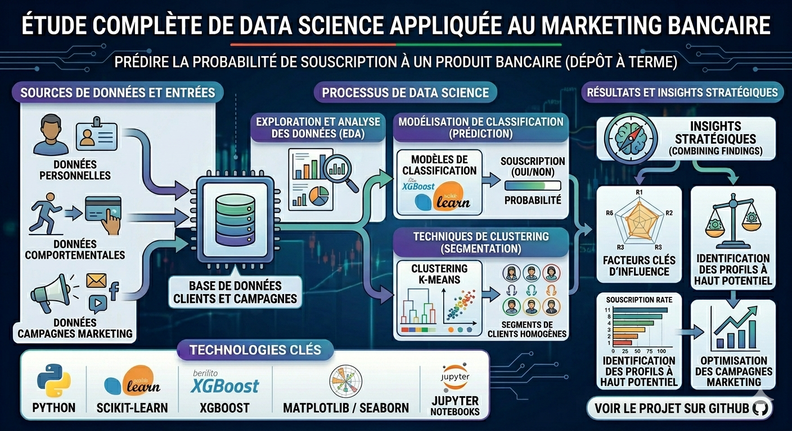

Élève-Ingénieure en Informatique Intelligence Artificielle et Applications
Je conçois et développe des solutions intelligentes basées sur l’intelligence artificielle, la data et le développement logiciel.
Je suis SAWADOGO Imaane, élève-ingénieure en Informatique, Intelligence Artificielle et Applications à l'Institut International d'Ingénierie de l'Eau et de l'Environnement (2iE). Animée par une forte curiosité pour les technologies numériques, je construis progressivement mon expertise à l'intersection de l'intelligence artificielle, de la data science, du big data et du développement logiciel.
Mon intérêt pour ces domaines repose sur une conviction simple : la donnée est aujourd'hui au cœur de la prise de décision et de l'innovation. Comprendre, structurer et exploiter les données permet de concevoir des systèmes intelligents capables d'apporter de la valeur dans des contextes variés. C'est dans cette dynamique que j'oriente mon parcours académique et mes projets.
Au fil de ma formation, j'ai acquis des bases solides en programmation, en analyse et traitement des données, ainsi qu'en conception d'applications. Je m'intéresse également aux problématiques liées à l'architecture des systèmes, à la gestion de données à grande échelle et à l'intégration de modèles d'intelligence artificielle dans des solutions concrètes. Mon approche consiste à aller au-delà de la théorie en travaillant sur des projets pratiques, me permettant de développer à la fois ma rigueur technique et ma capacité à résoudre des problèmes complexes.
J'accorde une importance particulière à la compréhension globale des systèmes : depuis la collecte des données jusqu'à leur exploitation à travers des modèles analytiques ou des applications intelligentes. Cette vision me permet d'aborder les projets avec une approche structurée, orientée vers l'efficacité et l'impact.
En parallèle, je m'implique dans des initiatives académiques et technologiques, notamment à travers des projets collaboratifs, des hackathons et des travaux pratiques, qui renforcent mon esprit d'équipe, ma capacité d'adaptation et mon sens de l'organisation. Ces expériences me permettent également de rester en veille constante sur les évolutions du domaine et d'explorer de nouvelles approches en data science et en intelligence artificielle.
Curieuse, déterminée et orientée vers l'apprentissage continu, je cherche constamment à approfondir mes compétences et à relever de nouveaux défis techniques. J'accorde également une grande importance à la qualité du travail, à la clarté des solutions proposées et à leur pertinence dans des contextes réels.
Objectif : devenir une experte en intelligence artificielle, data engineering et analytics, capable de concevoir des systèmes intelligents, robustes et évolutifs, et de contribuer activement à la transformation numérique à travers des solutions innovantes basées sur la donnée.
2iE - Burkina Faso
Ouagadougou, Burkina Faso
Ce projet consiste à développer un modèle CNN sous Keras pour détecter automatiquement la tuberculose à partir de radiographies thoraciques issues de Kaggle, à évaluer ses performances (accuracy, précision, rappel, F1-score) avec un rappel moyen de 94,4 %, et à déployer le système sur une interface web Streamlit pour en faire un outil d’aide au diagnostic.
Ce projet vise à créer une application de surveillance sismique en temps réel. Il collecte les données de l'API USGS via un producteur Kafka, les traite et les enrichit avec Spark Structured Streaming pour détecter les anomalies, puis les visualise sur un tableau de bord Streamlit interactif avec cartes et graphiques. L'ensemble de l'architecture est conteneurisé avec Docker Compose pour une portabilité et un déploiement rapides.
Ce projet vise à réaliser une analyse approfondie des données sur la dépression des étudiants en utilisant les technologies Big Data Hadoop (MapReduce, Hive, Pig) pour traiter un grand volume de données. L'objectif est d'explorer la prévalence des facteurs de risque et des pensées suicidaires, de calculer des taux et des statistiques clés, afin de dégager des tendances significatives et de proposer des recommandations concrètes pour l'amélioration de la santé mentale en milieu étudiant.

Ce projet s’inscrit dans le cadre d’une analyse avancée du marché immobilier français pour l’année 2023, en s’appuyant sur Apache Spark afin de traiter efficacement de gros volumes de données. Il vise à fournir des insights stratégiques à la direction d’une entreprise immobilière, en croisant les données de transactions immobilières avec les données démographiques des communes. L’objectif principal est d’analyser les tendances du marché immobilier, d’identifier les disparités géographiques et démographiques, et de concevoir un modèle prédictif des prix immobiliers. Une attention particulière est également portée à la sécurisation des données sensibles, en conformité avec le RGPD. Enfin, le projet prévoit la production de visualisations claires et exploitables afin de faciliter la prise de décision stratégique.

Ce projet porte sur le développement d’un Système de Gestion d’Université au Burkina Faso, réalisé dans le cadre d’un projet de Cloud Computing. Il s’agit d’une application web de gestion universitaire, déployée avec Docker, et spécialement conçue pour répondre aux contraintes locales, notamment la faible bande passante et un budget limité. La plateforme permet de centraliser et d’optimiser les principales activités académiques et administratives. Elle intègre la gestion des étudiants (inscriptions, profils, parcours académiques), la gestion des enseignants (affectations et emplois du temps), ainsi que la gestion des notes (saisie, consultation et génération de bulletins). Elle inclut également un module de paiement des frais de scolarité et un tableau de bord administrateur offrant une vue globale pour faciliter la prise de décision.

Ce projet consiste en une étude complète de data science appliquée au marketing bancaire, visant à prédire la probabilité qu’un client souscrive à un produit bancaire (dépôt à terme), à partir de données personnelles, comportementales et issues des campagnes marketing. L’approche repose sur une phase d’exploration et d’analyse des données clients, suivie de la mise en place de modèles de classification pour prédire la souscription (oui/non). En parallèle, des techniques de clustering sont utilisées afin de segmenter les clients en groupes homogènes. Ces analyses permettent de dégager des insights stratégiques, notamment l’identification des facteurs clés influençant la décision de souscription.
Force-n
Certificat de formation
Formation en traitement et analyse de données avec les meilleures pratiques métier.
Voir le certificatSAP
Certificat de formation
Certification SAP BW pour la gestion avancée des entrepôts de données et l'analyse décisionnelle.
Voir le certificatODC
Certificat de formation
Formation initiale aux concepts et outils du Big Data pour le traitement de masses de données.
Voir le certificatODC
Certificat de formation
Formation approfondie en apprentissage automatique et algorithmes prédictifs.
Voir le certificatAMON BAZONGO - Promoteur
01/11/2025
Pour sa participation remarquable et son engagement exemplaire à la SEINAR 2025.
Voir le certificatProgramme de Formation
Certificat de participation
Programme d'accompagnement et de formation pour développeuses talentueuses en informatique.
Voir le certificatAnalyse de données de santé communautaire : cas de mHealth
Spécialisation en Intelligence Artificielle et Data Science pour l'Innovation
N'hésitez pas à me contacter pour discuter de projets, d'opportunités de collaboration, ou simplement pour échanger sur l'IA, l'analyse de données et des technologies.
2iE, Ouagadougou, Burkina Faso